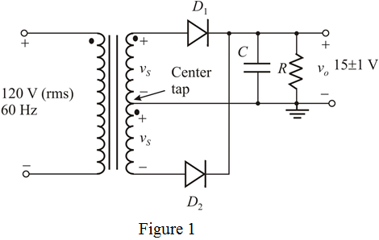

In the full wave rectifier in Figure 1, any time only one diode conducts either .
The average dc output voltage is
The allowed ripple voltage is
Calculate the maximum peak voltage.

(a)
The center tapped full wave rectifier is shown in Figure 1.

In the full wave rectifier in Figure 1, any time only one diode conducts either .
The average dc output voltage is
The allowed ripple voltage is
Calculate the maximum peak voltage.
During positive half cycle, the diode  is forward biased or conducts and the diode
is forward biased or conducts and the diode  is reverse biased or do not conduct.
is reverse biased or do not conduct.
During negative half cycle, the diode  is forward biased or conducts and the diode
is forward biased or conducts and the diode  is reverse biased or do not conduct.
is reverse biased or do not conduct.
Here, each diode has 0.7 V voltage drop. In either cycle, one diode conducts.
Now, calculate the rectifier peak voltage of each secondary winding.
Calculate the rms voltage across entire secondary winding.
Therefore, the rms voltage across entire secondary winding is .
(b)
Write the formula for ripple voltage.
Substitute 60 Hz for  , for
, for  , 16 V for
, 16 V for  to calculate the capacitor value.
to calculate the capacitor value.

Therefore, the required value of filter capacitor is .
(c)
The maximum reverse voltage occurs when the secondary voltage is at its peak value.
Calculate the maximum reverse voltage.
Therefore, the maximum reverse voltage that appears across the diode is .
Calculate the peak inverse voltage.
Therefore, peak inverse voltage of the diode is .
Therefore, the peak inverse voltage using safety factor is .
(d)
Write the formula for an average diode current during the diode conduction.
Substitute 15 V for  , for
, for  , 16 V for
, 16 V for  , and for
, and for  .
.

Therefore, the average diode current is .
(e)
Write the formula for the peak diode current.
Substitute 15 V for  ,
,  for , 16 V for , and
for , 16 V for , and  for
for  .
.
Therefore, the peak diode current is .